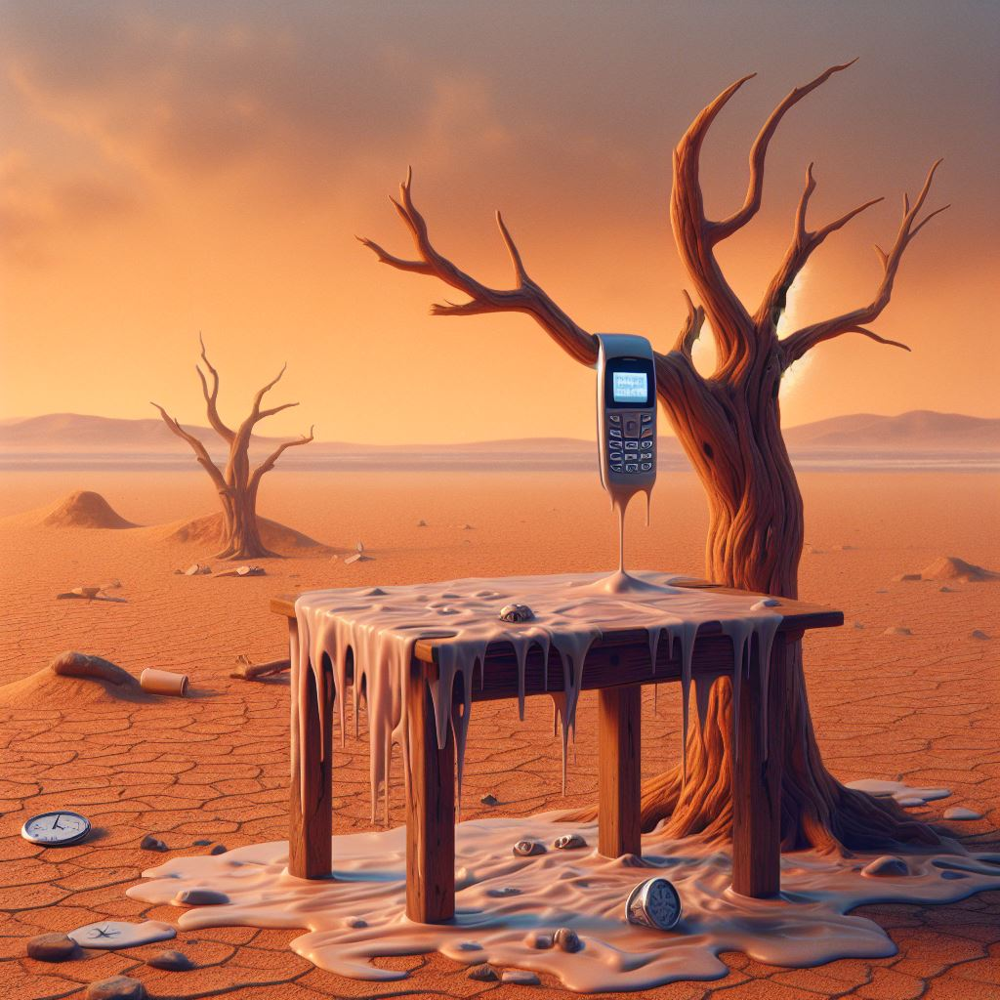

Some reflections, hopes, and plans for 2024
Peter Licari ![]()

2023 has just about come to a close. I thought I was due for an audit on how things went and where (I think) things are going.
2023
If you had asked me on January 1st what I’d expect to happen for the year, just about all of my predictions would be wrong. Some of the gaps reflect shocks and major stressors. I never would’ve guessed that I was going to be laid off and unemployed for 4 months. I never would’ve guessed that I’d need to buy a new (used) car so that my family can accommodate my work travel. I never would’ve guessed my mortgage would skyrocket thanks to Florida’s collapsing home insurance market. I never would’ve guessed that my HVAC unit would die on me. (Or, perhaps worse, that my Xbox One would too1.
But many of the gaps reflect genuine joys. I never would’ve guessed that my wife’s health would improve (in the jagged, stochastic way that only chronic illness can) enough that she’d be able to start working again. I’d never guess that I’d find genuine enjoyment, as well as personal and professional satisfaction, from working a full-time gig so ostensibly askance to my academic background. I’d never guess that I’d get the chance to also be entrepreneurial and use free time to work on some of my best, most meaningful research to date (I helped field a survey for the NYU Queer Data Lab and co-wrotethis report on a survey I consulted on with Neighborly Faith about Christian Nationalism and religious pluralism in the US)—and that I’d get paid to do it. Fuck, honestly, I’d never guess that I’d have free time. And I did! Enough to finish nearly a dozen games, read/listen to about 70 books (Mangas count, damnit), train to run a respectable 5k time, pick-up writing for fun again, and make a useful R package! I never would’ve guessed at how deep my pride, love, and awe would stretch, watching my daughter grow into such a kind, sharp, adventurous, and forthright little human. She surprises me daily—and often more frequently than that—by her words and actions and also by how these things only deepen the reservoir of love I have for her. The greatest honor of my life is being her father.
2024 Hopes
I have some hopes for this year.
I’d really like to not get laid off again; that’d be nice.
I hope that I’ll continue to learn and find enjoyment in my work at Universal and to continue my consulting work. There are a few major expenses coming; I’m hoping that they’re spaced out in a way we can handle without adding more gray to my beard. We’re hoping to do some travel and my wife and I are hoping to spend more time together as a family—and I’m also hoping for quality time with family and friends too.
I’m hoping we get another good year of health with my elderly dog and aging cat. I’m hoping my wife’s health continues to improve and she finds her vocations fulfilling.
I’ve decided to run a half-matathon, I’m hoping for a new PR at the distance. Funny enough though, I’ve only ever ran full marathons—so a PR is gauranteed no matter how slow I go!
Speaking of running: After spending most of my ~20 year running career running shirtless and sunscreen-less under the increasingly fierce Florida sun, I’m finally taking care of my skin and seeing a dermatologist to assess the damage. It’s time to pay the piper; I’m hopeful his price ain’t too steep. (Seriously: wear your fucking sunscreen).
And, of course, I’m hopeful that my daughter continues to be happy, healthy, curious, and kind.
About the whole 30 thing
This next year marks the start of my 4th decade. I’m honestly more surprised by how little I’m phased about 30 being around the bend. I have a few friends who dreaded it; I’m pretty indifferent. People have been thinking I’m 30 since I was, like, 23 thanks to 1) my facial hair; 2) being in grad school; and 3) all the aforementioned shirtless running. So it’s almost feels like I’m stepping into the age that everyone’s assumed me to be anyhow. Though I’d be lying if I said that the increased prominence and density of gray hairs didn’t niggle me a little.
I have a pretty strong vision of what I want my life to look like by 40. And while I expect some of those details to change, I don’t think there’s going to be as much change in vision from 30-40 as there was from 15-25 or 20-30. For better or worse, the stressors of the last few years have really forced a lot of things into perspective. My professional goals are tied less to titles, employers, and technologies than they are to the types of work I’m doing, the broader skills I’m learning, and the kinds of folks I’m doing it with and for. But these aims are all now largely in the service of other aspirations. Most of the vision actually constitutes things what I hope my body looks like, how I hope it’ll function vis my running, exercise, and play; how much time and resources I can expend on things that replenish me like travel, hobbies, and time with loved ones; quality time and adventures spent with my family, being there for events milestones; the capacity and positionality I hope to have to serve others; dedication to spiritual practice (I hope to one day graduate from “a bad Quaker” to “not a bad Quaker”); and proximity to family to help them as they undergo their own transitions this next decade. But I’d call the vision strong in the same way that I’d refer to a van Gogh as strong: the impression is solid and vibrant; the essence unmistakable not “despite” the lack of precise detail but because of the lack of precise detail.
Goals for 2024
I do have some more measurable goals for 2024:
- Ingest 100 books (manga, comics, and Great Courses count)
- Listen to 200 new-to-me albums
- Check in to Duolingo 100 times
- Play 10-15 new games (board/tabletop games count)
- Learn to cook 10-15 new recipes/foods (new cooking techniques to rehash old recipes count)
- Watch 10-15 new-to-me movies
- Watch 20-30 new/new-to me TV seasons.
- Ingest 50 documentaries (YouTube videos count if they’re more than 20 minutes and educational; podcasts count if over 30 minutes)
- Keep my weight between 150-160lbs
- Run 1,200 miles
- Visit the gym 50 times
- Do 25 sessions of Yoga
- Do 100 sessions of core
- Run one race with a performance I’m proud of
- Write 25-30 issues of Pulse of the Polis
- Write 20-30 pieces of non-PotP content (blog posts, reviews, white/working papers, tutorials, poetry, micro-fiction, whatsver. So long as it took some effort to write)
- Write 50 daily dairy entries
- Post 50 things of value to others on LinkedIn
- Attend at least one Quaker Meeting
- Make 5-10 videos; one at least 5 minutes long.
- Contribute to/make 3 open source/code projects.
- Do 5-10 DIY projects (home repairs and improvements count so long as I’m the one actually doing them; digital art counts too so long as it’s something I’d hang in my house).
- Have 15-20 coffee chats with long-distance friends new and old (actually seeing them counts too).
These aren’t designed to be “resolutions.” If anything, they’re more like OKRs for my 2024. I fully expect to fail in a lot of these. Hell, maybe all of them. But in failing to hit these, I’ll still be doing things that are useful and meaningful to me. I love movies but I hardly watch them; the goal isn’t a limit or a chore but a return to something that I enjoy because I love overthinking pop culture—but I can’t do that if I don’t engage in pop culture! I love music; 200 albums is probably fewer than I’ve listened to this year and will help me on my own journey in drumming. And, you know what: 10 books read2 is better than 0 and mindlessly scrolling Reddit. 10 newsletters are better than 0 and me not staying abreast the literature. 1 game is better than 0. (And since I bought a new Xbox, I’d best get some use out of the damn thing). 100 miles is better than 0. 1 friend seen is better than 0.
And in striving for these things, I’ll be improving habits that I’ve been working on for a while, like taking better notes of my day and of the things I’m reading, being present, showing myself love by taking care of myself and my body. And it serves to focus my efforts in those habits. It also helps me be more deliberate about my attention: I really don’t want my Reddit scrolling distance to be an appreciable fraction of the Earth’s fucking circumference. I’ll settle for an appreciable fraction of the length of a small country, though.
Some sketching of production strategy
I’ll close out with some thoughts and plans about my personal tech stack and content strategy for the year ahead. While I hate to make it sound like my life is a commodity and my hobbies must be orchestrated as if the ghost of Frederick Winslow Taylor was clocking my productivity, I think that it’s the best verbiage and framework for my life right now. At one point I was so “in” on my own “personal brand strategy” that I was too paralyzed to actually make all that much without extrinsic motivation. That made me miserable. So then I relaxed, but I became so lackadaisical that I didn’t make anything! And that made me miserable. Turns out moderation is both desirable but also hard? Who knew!
So here’s what I’m planning both for this year and the future (at least as of today):
- I’m investing in (both in terms of time and probably money) generative AI plan to help my tech development work, to make custom images to accompany/accelerate my creative outputs, and to act as an editor for all of the writing I’ll be doing. I plan on doing my own writing though, it’s generally pretty mediocre at actually executing on written creative works and I don’t want to write mediocre things. It can be decent to bounce ideas off of, but I’ve spent years developing my voice. I’m far too pot-invested to cede it to an AI. (Though you can bet your ass I’m having it write code documentation and elements of projects where serviceable English is sufficient).
- I’m using Obsidian for my note taking, project sketching, and goal tracking. I may write a blog post about how I’ve set it up but that’s for another day.
- I’ll be keeping Substack for now because I couldn’t afford to run PotP with the features I want on another platform. I’m hoping to make the newsletter self-sustaining (or at least worth investment due to other payoffs it provides) in the next year. I’m also hoping, within that time, the platform will change its position on its decision to profit from openly White supremacist publications3.
- This blog is written in Quarto. That’s probably how I’ll be doing most of my technical writing. Vanilla markdown is what I’ll do for my other writing.
- I’ll be writing “data journalism-y” things, my more direct and actionable tutorials, and my more timely reviews and (informed) thought pieces on Medium and its ilk. This is mostly for discovery: Medium is a highly-trafficked, well-indexed site.
- Quick hits (like random data visuals and quick—but interesting—facts, helpful insights and realizations), will be published here and on Social Media. I’m thinking of posting video versions on TikTok (ugh, I’m gonna get on that I guess) and/or YT Shorts depending on the content. (Since TikTok is new for me and less about “channels”, I’ll post a more eclectic range of things. YT shorts will tend towards “infotainment” rather than code).4
- I’ll be using osf for original research projects that are more about social science theory building, testing, exploration and about contributions to research methodology. Unless I work with academic coauthors, I don’t see myself submitting to traditional peer review (though I’ll happily review a few things). But I may ask for some actual peers to read over and review these outputs.
- Longer essays, reviews that are about more than just the piece of media itself, and syntheses of various media/individual topics/facts will likely live on YouTube proper. Some might instead/also get white paper treatments or essays on Medium. But their primary home will probably be YouTube.
- This blog is going to be a grab bag of reviews, observations, announcements, code, artworks, poetry and short fiction (if it’s good enough to share)5, and short tutorials. The place where anything and everything can go because, why not, it’s my little home on the web—why not go maximalist with it? My home isn’t meant to be turned into grist for the algorithm; it’s meant to be a place that’s lived in.
- I’ll be primary using R and Python but don’t be surprised if some other languages crop up in pursuit of the year’s goals (namely Rust and JavaScript). Which means I may be using VScode more.
That’s all for now! It’s been a ride. Happy 2024! Also, Sundays are the start of my week so this blog totally counts towards my 2024 goals. Only 19 to goal!
Footnotes
On the one hand, this is obviously a joke. On the other, if you knew my family and its priorities…↩︎
I’m not going to only read 10, I’ve got the last 4 issues of Assassination Classroom in my backpack for a trip tomorrow and I’m halfway through the latest Murderbot on my Kindle. I’ll be halfway to 10 by the end of this week.↩︎
To clarify quickly: This is not a speech issue to me. I would be fine with Substack merely permitting that and other disdainful content to be published on the platform—so long as it does not serve to incite violence or engage in harassment, nor do they knowingly index it/promote it. What gets me is their decision to make money off of the White supremacist sites. By analogy, I don’t like that Walmart makes money from White supremacist customers, but their reusable bags don’t have the 14 words written on them or anything. Their money comes from servicing people with odious views but not from disseminating said views. But I’d be really angry with a newspaper deciding to hire on a White supremacist to their op-ed team because they would be using their platform to espouse hate while also making money, even if the rest of the staff held perfectly conventional views. By positioning themselves as a content provider and not merely a hosting platform, Substack is effectively giving their imprimatur to their profit-sharing partners. And I don’t like to do business with people who think it’s good business to make money off the promulgation of Neo-Naziism and White supremacy↩︎
I’ve also decided to delete any comments that are abusive, vitriolic, and hateful and ban repeat offenders. I’ll happily accept disagreement and good faith critique but (pseudo)anonymity doesn’t provide license for being an asshole. Act like a troll, get placed under the bridge. I’m also not going to really engage with comments for videos older than a couple of days or so unless one happens to catch my eye from a bird’s eye view of channel activity.↩︎
Otherwise, to the notes app they go. Forever.↩︎
Reuse
Citation
@online{licari2023,
author = {Peter Licari},
title = {Some Reflections, Hopes, and Plans for 2024},
date = {2023-12-30},
url = {www.peterlicari.com/posts/plans-for-2024},
langid = {en}
}